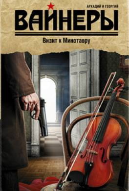

Аркадий Вайнер, Георгий Вайнер. Визит к Минотавру
РОМАН
* КНИГА ПЕРВАЯ. Вход в лабиринт
Глава 1 Улыбка Королевы
 Лаврова заглянула через мое плечо:
- "Гениям поклоняются дамы и монархи, ибо десница их осенена Господом".
- Вы это всерьез полагаете? -- обернулся я к Лавровой.
- Это не я, это бельгийская королева так полагает, -- сказала Лаврова.
- Н-да, жаль, что я не гений, -- покачал я головой.
- А зачем вам быть гением? -- спросила Лаврова.
- Расположение монархов вас не интересует, а с поклонницами у вас и так, по-моему, все в порядке.
- И все-таки жаль, что я не гений.
- Слушайте, не гений, вы о чем сейчас думаете? -- спросил Халецкий.
- Ни о чем. Мне сейчас думать вредно. Я сейчас стараюсь стать запоминающей машиной. Вот когда все зафиксирую в памяти, тогда начну думать.
- Неужели вам никогда не надоедает оригинальничать? -- раздраженно спросила Лазроза.
Я удивленно посмотрел на нее, потом засмеялся:
-- Леночка, а я ведь не оригинальничаю. И не я это придумал. Еще много лет назад меня учил этому наш славный шеф -- подполковник милиции Шарапов. -- Чему? Не думать? -- Нет, в первую очередь запоминать. Я должен сейчас сразу и навсегда запомнить то, что пока есть, но может исчезнуть или измениться...-- Например? -- Так не например, а конкретно: существует несколько неоспоримых, раз и навсегда установленных правил. Запомнить время по часам -- своим и на месте преступления, даже если они стоят. Это первое. Затем -- осмотр дверей, целы ли, заперты, закрыты, есть ли ключи. То же самое -- с окнами. Установить наличие света. Посмотреть, как обстоит с занавесями. Проверить наличие запахов -- курева, газа, пороха, горелого, духов, бензина, чеснока и так далее. Погода, это почти всегда важно. При всем этом ни в коем случае нельзя спешить с выводами -- ответ на задачу всегда находится в конце, а не в начале. Ну и, конечно, ни в коем случае нельзя давать вовлечь себя в дискуссию зевакам...
Лаврова долго смотрела мне в глаза, потом негромко спросила: -- Последняя из этих МУРовских заповедей -- для меня? Я снова перевел взгляд на улыбающуюся королеву, затем поднял голову: -- Перестаньте, Лена. Я вас старше не только по званию. Я вас вообще старше. И гораздо опытнее. И все равно очень многого еще не знаю. И когда меня, как котенка, тычут носом, я не обижаюсь, а учусь. Во всяком случае, стараюсь не обижаться. По-моему, это единственно приемлемая программа для умного человека...
-- Поскольку вы не только старше меня вообще, но и по званию, будем считать, что вы меня убедили, -- пожала плечами Лаврова. -- Ага, будем считать так, -- сказал я, сдерживая злость. -- Я точно знаю, что это самая лучшая позиция убеждения. -- Несомненно, -- подтвердила Лаврова. -- Правда, с этой позиции убеждение уже иначе называется...
-- Вот и прелестно, -- согласился я. -- Начните выполнение моего приказа с общего осмотра и составления плана места преступления... Лаврова с ненавистью посмотрела на улыбающуюся королеву и пошла в кабинет. Я сказал ей вслед:
-- И про заповеди не забудьте... Халецкий не спеша проговорил: -- Если мне будет позволено заметить, то обращу ваше внимание, Тихонов, на то, что я, в свою очередь, старше и опытнее вас.
-- Будет позволено. И что? -- Что? Что вы не правы. -- Это почему еще?
-- В своей молодой, неутоленной жизненной сердитости вы ошибочно полагаете, будто через несколько лет, когда Лена станет опытным, зрелым работником, она будет с душевной теплотой вспоминать о строгом, но справедливом и мудром первом учителе сыска -- Станиславе Тихонове... -- Не знаю, возможно. Я как-то не думал об этом.
-- Так вот -- нет. Не будет она с душевной теплотой вспоминать о вас. Она будет вспоминать о вас, как о нудном и к тому же жестоком субъекте. -- Ной Маркович, неужели я нудный и жестокий субъект? С вашей точки зрения?
-- Вас же не интересует, что я буду думать о вас через несколько лет. А сейчас, будучи гораздо старше и опытнее, как вы говорите, -- вообще, я полагаю, что через плотину вашего разума регулярно переливаются волны молодой злости и нетерпимости. Будьте добрее -- вам это не повредит.
-- Может быть, может быть, -- сказал я. -- Так что вы думаете насчет портрета? -- спросил Халецкий. -- Я думаю, что где-то здесь поблизости должен валяться гвоздик, на котором он висел.
-- Я тоже так думаю, -- кивнул Халецкий. -- Портрет вор не сбросил -- он, видимо, только трогал его, гвоздь выпал, и портрет упал... Мы давно работали вместе и умели разговаривать кратко. Так люди выпускают в телеграммах предлоги -- для экономии места, только мы выпускали целые куски разговора, и все равно хорошо понимали друг друга. -- Ной Маркович, а вы сможете собрать осколки? -- спросил я. -- Я постараюсь...
Халецкий стал распаковывать свой криминалистический чемодан, который за необъятность инспектора называли "Ноев ковчег". Я напомнил: -- Соскобы крови с пола возьмите в первую очередь. Халецкий взглянул на меня поверх стекол очков: ---- Непременно. Я уже слышал как-то, что это может иметь интерес для следствия...
Я еще раз взглянул на портрет. Холодное солнце поднялось выше, тени стали острее, рельефнее, и трещины были уже не похожи на морщинки. Косыми рубцами рассекали они улыбающееся лицо на фотографии, и от этого лицо будто вмялось, затаилось, замолкло совсем...
-- Не стойте, сядьте вот на этот стул, -- сказал я соседке Полякова. Непостижимость случившегося или неправильное представление о моей руководящей роли в московской милиции погрузили ее в какое-то нервозное состояние. Она безостановочно проводила дрожащей рукой по волосам -- серым, непричесанным, жидким, и все время повторяла:
-- Ничего, ничего, мы постоим, труд не велик, чин не большой... -- Это у меня чин не большой, а труд, наоборот, велик, -- сказал я ей, -- так что вы садитесь, мне с вами капитально поговорить надо. Она уселась на самый краешек стула, запахнув поглубже застиранный штапельный халатик, и я увидел, что всю ее трясет мелкая дрожь. Она была без чулок, и я против воли смотрел на ее отекшие голые ноги в тяжелых синих буграх вен, -- У вас ноги больные? -- спросил я. -- Нет, нет, ничего, -- ответила она испуганно. -- То есть да. Тромбофлебит мучит, совсем почти обезножела.
-- Вам надо кокарбоксилазу принимать. Это от сердца, и ногам помогает. Лекарство новое, оно и успокаивающее -- от нервов. Она посмотрела на меня водянистыми испуганными глазами и сказала: -- На Головинском кладбище для меня лекарство приготовлено... Успокаивающее... Я махнул рукой:
-- Это успокаивающее от нас от всех не убежит. Да что вы так волнуетесь? Она смотрела в окно сквозь меня -- навылет, беззвучно шевелила губами, потом еле слышно, на вздохе, сказала:
-- А как мне не волноваться -- ключи от квартиры только у меня были... -- А почему у вас? -- Надежда Александровна, Льва Осипыча супруга, мне всегда ключи оставляла. Сам-то рассеян очень, забывает их то на даче, то на работе, и стоит тут под дверью, кукует. Потом, помогаю я по хозяйству Надежде Александровне...
-- Где ключи сейчас? Она вынула из карманчика три ключа на кольце с брелоком в виде автомобильного колеса. -- Вы ключи никому не передавали? Женщина еще сильнее побледнела. -- Я спрашиваю вас, вы ключи никому не давали? Хоть на короткое время? -- Нет, не давала, -- сказала она, и тяжелые серые слезы побежали по ее пористому лицу.
С шипением вспыхнул магний -- Халецкий с разных точек снимал комнату, соседка вздрогнула, и слезы потекли сильнее. Из спальни доносился острый звук шагов Лавровой, отчетливо стучали ее каблучки, тяжело сопел под нос Халецкий, беззвучно плакала усталая старая женщина. Я пошел на кухню и налил в никелированную кружку воды из-под крана, вернулся, протянул ей. Она кивнула и стала жадно пить воду, будто то, что она знала, нестерпимо палило ее, и зубы все время стучали о край кружки, и этот звук отдавался у меня в голове, как будто по ней барабанили пальцем.
Я не торопил ее. Не знаю почему, но уже тогда я понял, что спешить в этом деле некуда. Вопреки модной ныне теории, что интуиция, предчувствия, нюх и тому подобные атрибуты нашего ремесла сыщику сегодняшнего дня вредны с точки зрения научной и социальной, я все-таки верю в интуицию сыщика, более того, я просто уверен, что человеку без интуиции в уголовном розыске делать совершенно нечего. А то, что интуиция эта самая нас периодически подводит -- так тут уж ничего не попишешь: издержки производства. Вот и тогда, в самом еще начале, я почувствовал, что повозимся мы с этим делом всерьез...